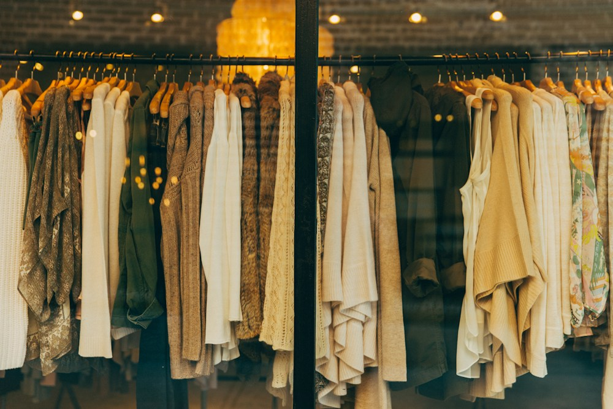

Your style.
Your day.
Figured out.
A personal stylist you can talk to.

A full closet.
Still nothing to wear.
Getting dressed means balancing your plans, the weather, comfort, and how you want to feel.
“I have class this morning
and a date tonight.”
A conversation that
gets you dressed
Find your style
Three questions about your look, budget, and comfort.
Bring your closet
Add clothing photos or start with the sample collection.
Make it your own
Get two outfits. Ask for a change in your own words.
Let’s style a real day
“Class this morning.
A date tonight.
And my black sneakers.”
Minimal style · Comfort first · 18°C and cloudy
Open the live demo ↗Where Gemini fits
See the clothes
Image inputs provide the details behind each wardrobe item.
Read the context
Preferences, plans, weather, and prior changes guide the response.
Refine the look
Structured outfit suggestions update through conversation.
The API key stays on the server. Outfit IDs are checked against the available wardrobe and catalog.
A small, complete prototype
Built for this demo
- Three style questions
- Wardrobe photo uploads
- Manual weather input
- Two outfits and refinements
- Optional pieces within budget
What comes next
- Save a wardrobe across visits
- Connect local weather
- Test outfit usefulness with users
- Verify real product availability
A little less
“nothing to wear.”
A little more you.
Muse helps you turn what you own into an outfit that fits your style and your day.
Explore the project ↗